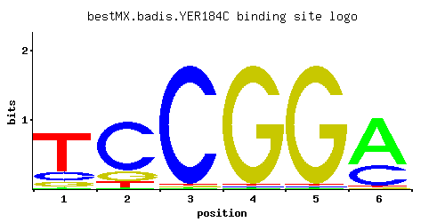

YER184C
No recorded aliases
Function unknown
Best-performing DNA-binding model.

View and copy the recommended matrices ↘
A | 0.02 0.01 0.01 0.01 0.01 0.68 C | 0.17 0.76 0.97 0.01 0.01 0.30 G | 0.10 0.15 0.01 0.97 0.97 0.01 T | 0.71 0.08 0.01 0.01 0.01 0.01
A | 2 1 1 1 1 68 C | 17 76 97 1 1 30 G | 10 15 1 97 97 1 T | 71 8 1 1 1 1
A | -2.77 -3.47 -3.47 -3.47 -3.47 0.75 C | -0.06 1.44 1.68 -2.89 -2.89 0.51 G | -0.59 -0.18 -2.89 1.68 1.68 -2.89 T | 0.80 -1.39 -3.47 -3.47 -3.47 -3.47
Alternative candidate matrices 1
Historical matrix candidates from the original ScerTF database. Expand a source to inspect its original logo, scores, and matrix values.
YER184CFoat et. al.P = 1View matrix ↘
Gene-level annotations and interactions.
Genes bound in ChIP-chip experiments 37 genes
YAL047C, YAR050W, YBL077W, YBL078C, YBR120C, YBR280C, YBR281C, YBR282W, YDR090C, YDR136C, YDR138W, YDR294C, YDR430C, YDR432W, YDR433W, YER142C, YER143W, YGR167W, YIL035C, YIR024C, YIR025W, YKR072C, YLR140W, YLR141W, YLR273C, YLR274W, YNL120C, YNL187W, YNL210W, YNL211C, YNL222W, YNL230C, YOL149W, YOL150C, YOR198C, YOR199W, YOR200W
Genes affected by TF deletion 73 genes
YAL034W-A, YDR207C, YOL048C, YEL011W, YGR125W, YPL014W, YPL016W, YDR342C, YMR103C, YMR105C, YPL283C, YGR248W, YGR250C, YPL112C, YJL017W, YMR104C, YNL116W, YBL024W, YDR309C, YGR211W, YLR183C, YCR021C, YDR074W, YOR267C, YBR169C, YDL072C, YKL051W, YOR043W, YDR011W, YER150W, YER154W, YML120C, YMR023C, YJR148W, YKL219W, YML100W, YBR166C, YFR015C, YFR017C, YMR084W, YDL234C, YER038C, YCR083W, YGR008C, YIR035C, YPL087W, YGR138C, YLR258W, YAR027W, YGR139W, YKL120W, YLR444C, YJL038C, YOR361C, YNL160W, YER067W, YBR054W, YLR297W, YDL124W, YDR055W, YMR001C, YMR034C, YHR135C, YLR452C, YMR181C, YMR250W, YLL026W, YCL040W, YCL042W, YLR178C, YFL068W, YHR045W, YLR327C
Predicted TF–TF partners 15 genes
CST6, DAL82, GIS1, MIG3, MSN4, PDR3, PDR8, PHD1, RGM1, RPH1, RSC3, STP1, SUT1, SUT2, USV1